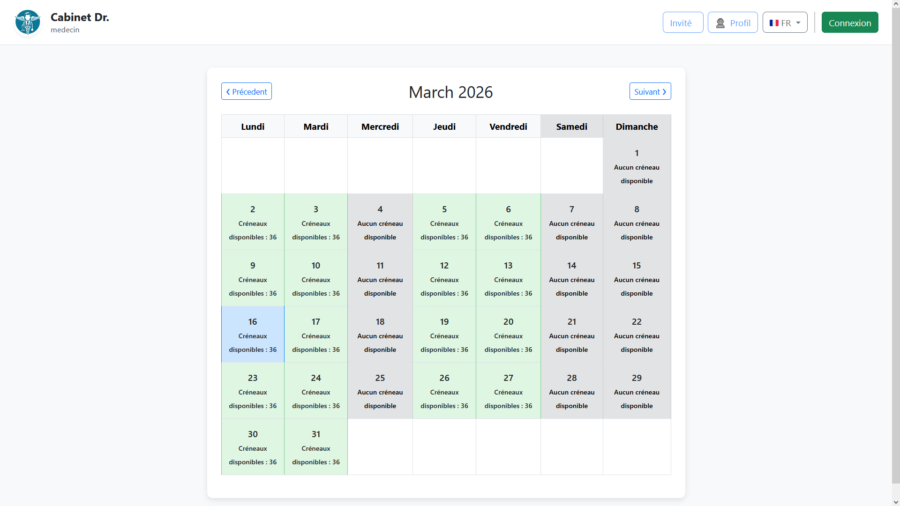
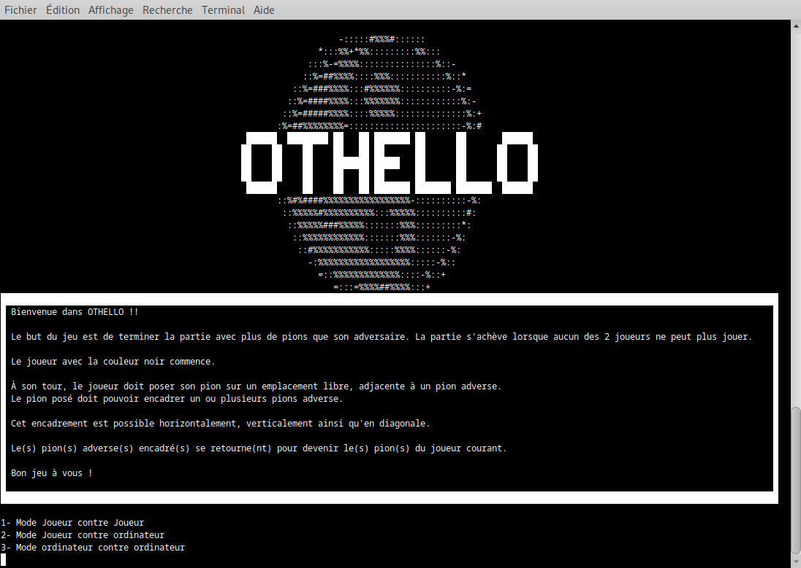
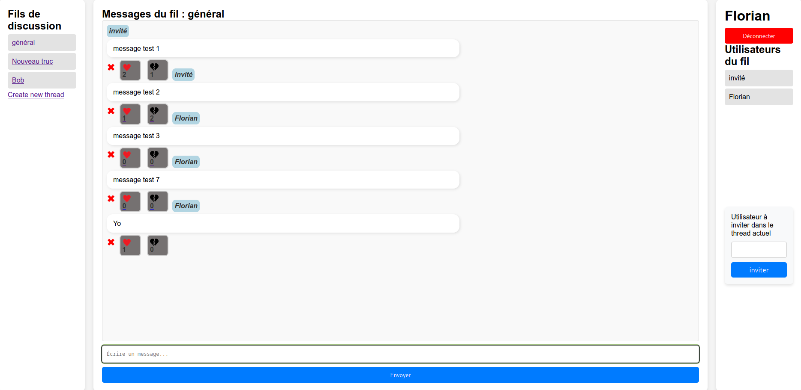
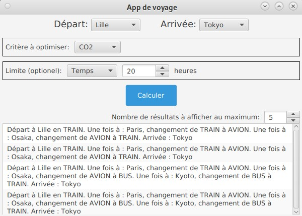
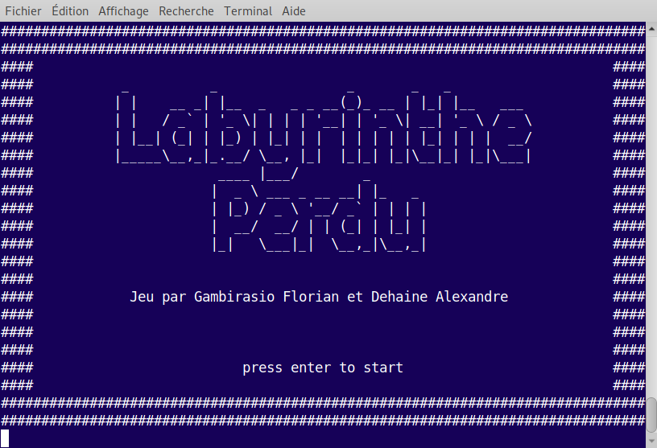
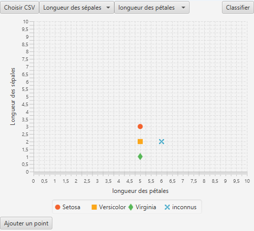

Application web de gestion de prises de rendez-vous en ligne, destinée à simplifier l'organisation de créneaux horaires pour différentes ressources (médecins, équipements, etc.). Développée avec Spring MVC et JPA pour la persistance des données dans une base H2 en mémoire, avec Spring Security pour la gestion de l'authentification et du contrôle d'accès.

Recréation complète du jeu Othello en Java dans le cadre d'un mini-projet Agile en groupe de 6. Application des principes Agile : décomposition des tâches, estimation et répartition en sprints de 1h30. Le jeu fonctionne en terminal, contre un joueur local ou contre un ordinateur.

Application web de messagerie multi-utilisateurs. Après création de compte et connexion, les utilisateurs accèdent à leurs fils de discussion, peuvent en créer de nouveaux et inviter d'autres membres via leur pseudo. Sur chaque fil, il est possible d'envoyer des messages, d'ajouter des likes/dislikes et de les supprimer.

Application Java qui lit un fichier CSV de routes (villes, modes de transport, CO₂, temps, prix) et génère un graphe pour déterminer le chemin optimal selon les critères choisis par l'utilisateur.

Jeu ludopédagogique en Java avec labyrinthe généré aléatoirement. Le joueur affronte des monstres qui posent des questions : bonne réponse → score augmenté, mauvaise → perte de vie. L'objectif est de vaincre le boss central avant de perdre toute sa vie.

Application implémentant l'algorithme des K plus proches voisins (K-NN) pour classifier une donnée inconnue au sein d'un jeu de données existant. Exemple concret : déterminer l'espèce d'un Iris inconnu à partir de ses caractéristiques et de sa proximité avec les autres spécimens du jeu de données.
